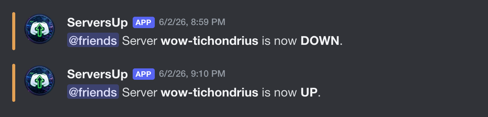
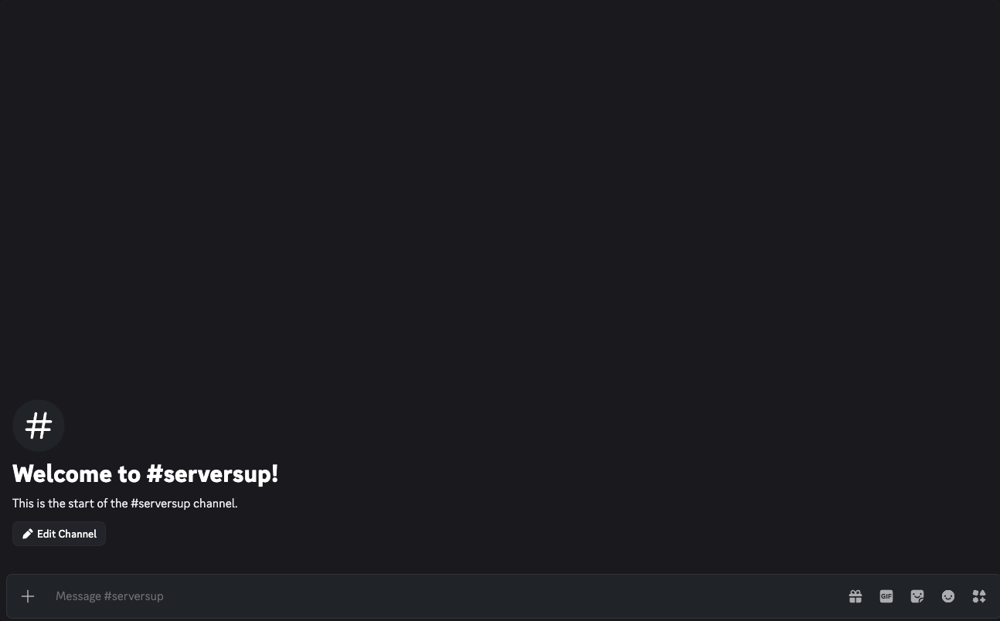

ServersUp alerts your Discord community when game servers go up or down. The bot is constantly polling game servers in the background, and when something changes, it sends a notification to anybody who has subscribed to that game server.
You do not need to keep refreshing official status pages or wait for maintenance posts that often arrive late. When status changes, the alert appears in the channel your community already watches.

Features
- Notifications within about a minute of a server status change
- Optional role mentions when you subscribe, so the right people get pinged
- Live status board on the homepage - no bot required to check UP/DOWN
How To Install And Set Up
- Add the bot to your server using the Add to Discord button above.
- Pick or create a channel for updates. Make sure the bot can send messages and read message history in that channel.
-
Run
/subscribein that channel and pick game, region, and server. Autocomplete helps you fill each field with valid values. Updates are sent to the channel where you run the command.

Commands
/subscribe: add a subscription (Manage Channels or Administrator required)/unsubscribe: remove one (Manage Channels or Administrator required)/subscriptions: list by channel/status: check UP/DOWN now/regions,/servers, and/games: browse the catalog/help: explain each command and common pitfalls
Supported games
Select a game and region, then search.
Upcoming changes
- Subscribe and get alerts via DM, outside your Discord server
- More games, including Old School RuneScape, other Blizzard titles, and popular MOBAs
- Added Live status homepage (no Discord bot required) 2026-07-13
- Added Multi-region WoW support 2026-05-26
- Added Final Fantasy XIV Online support 2026-06-04
Changelog
v1.3.1 2026-07-13
Website URL: live status and install docs are at serversup.armasn.dev.
v1.3 2026-07-13
Live status on the website: check World of Warcraft and Final Fantasy XIV UP/DOWN on the homepage without adding the Discord bot. Pick a game and region to browse every listed realm. The page uses the same live data as Discord alerts, so both stay in sync when a realm flips.
v1.2.1 2026-06-19
Faster regional Battle.net polls for World of Warcraft, so UP/DOWN changes can reach Discord sooner.
v1.2 2026-06-04
FFXIV support. Regions: na, eu, jp, oce. Example label: ffxiv-na-gilgamesh.
v1.1 2026-05-26
Multi-region WoW. Required region on subscribe, status, and servers.
v1.0.3 2026-05-15
/subscribe and /unsubscribe now require you to have Manage Channels or
Administrator in the server.
v1.0.2 2026-05-15
/servers and /status. Rate limits on status.
v1.0.1 2026-05-13
/games command.
v1.0.0 2026-05-07
Initial release.
Feedback
Have a suggestion, bug report, or question? Email me at armasndev@proton.me.
Support my work
Thanks for checking out ServersUp. I'm Armand. I build and host this in my spare time. Donations are never required, but they're genuinely appreciated and go toward infrastructure costs to keep the bot and this site running.